GeoScan fieldwork
Fieldwork, equipment & technical investigation.
Browse selected activities from geophysical surveys, drilling operations, geological inspection, infrastructure assessment and laboratory testing.
Gallery index.
Each image includes a concise description so visitors can understand the technical activity shown.
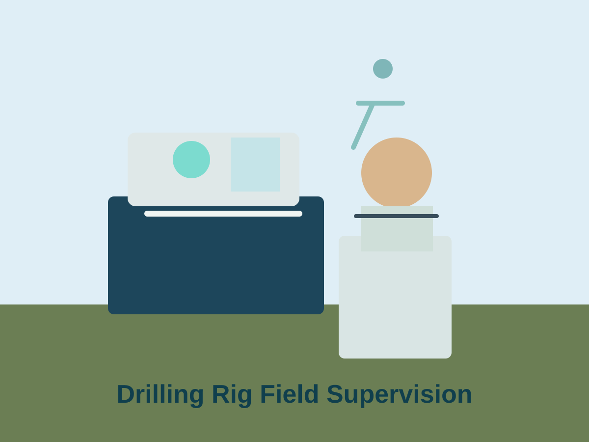
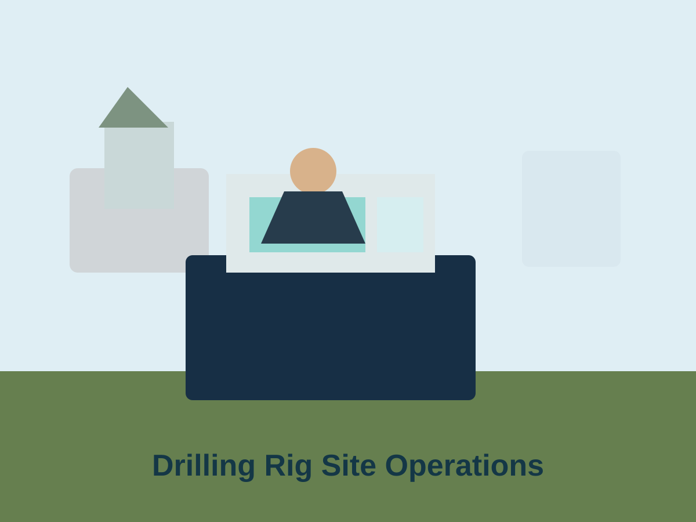
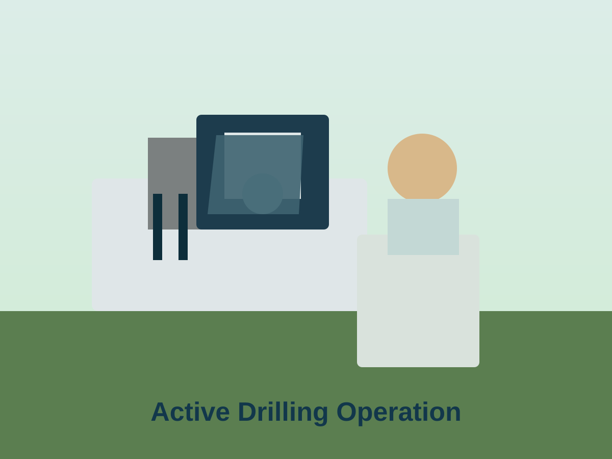
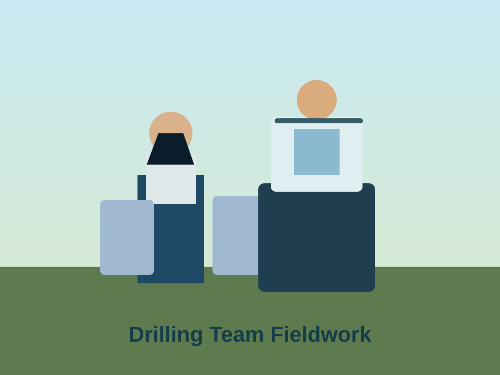
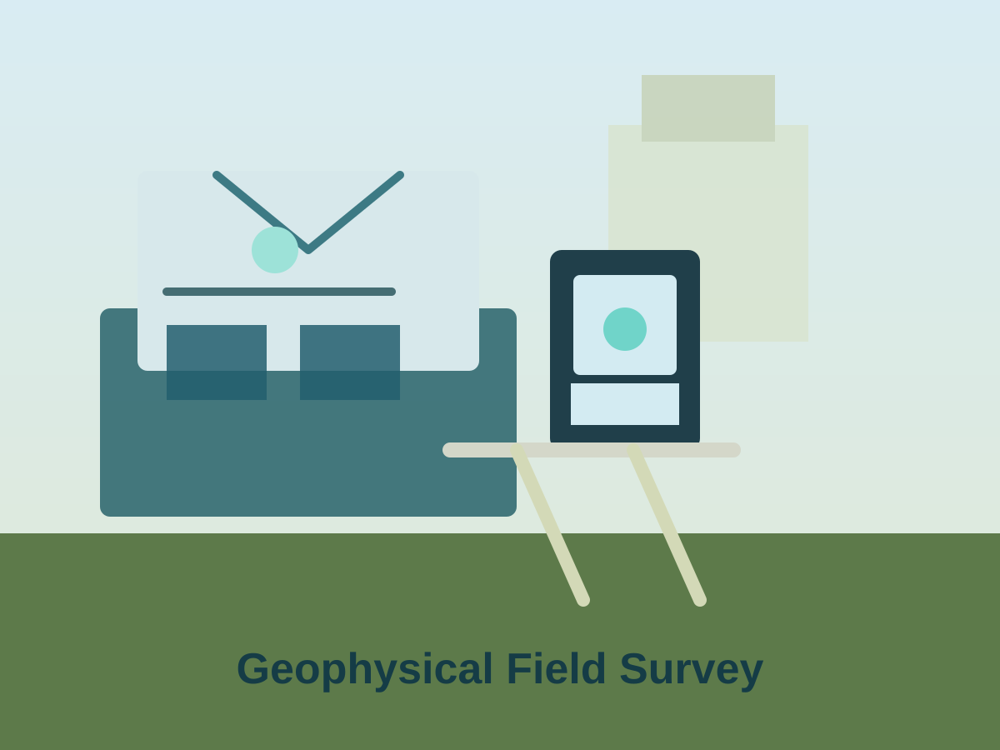
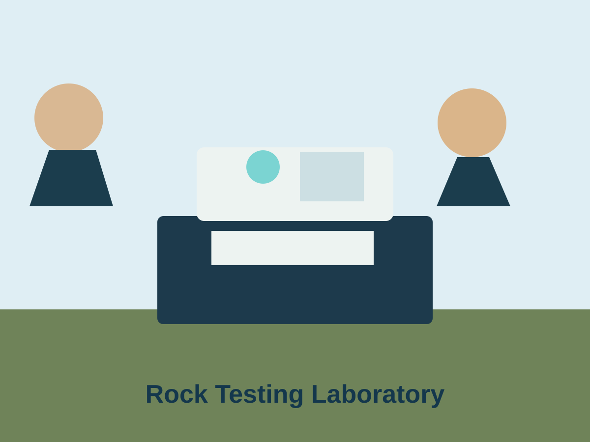

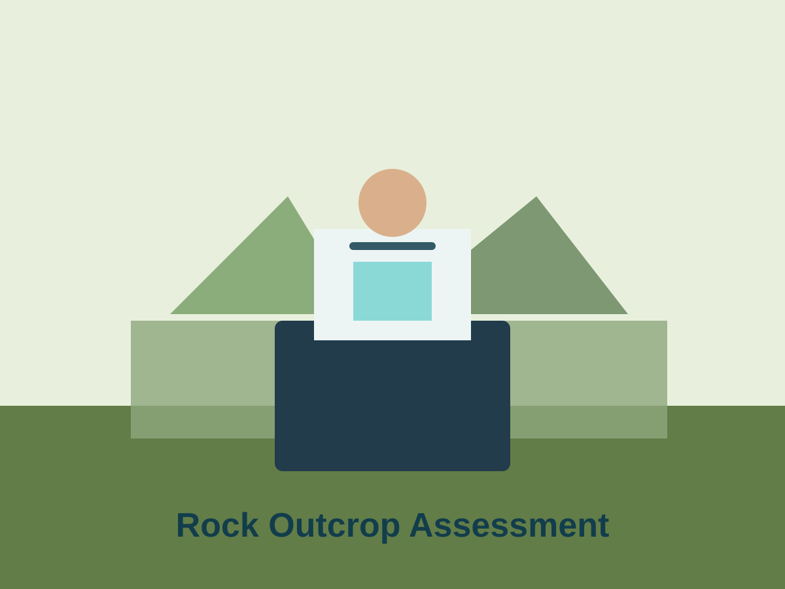
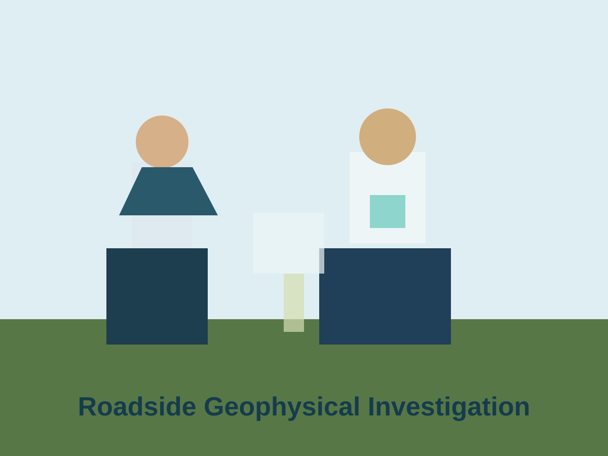
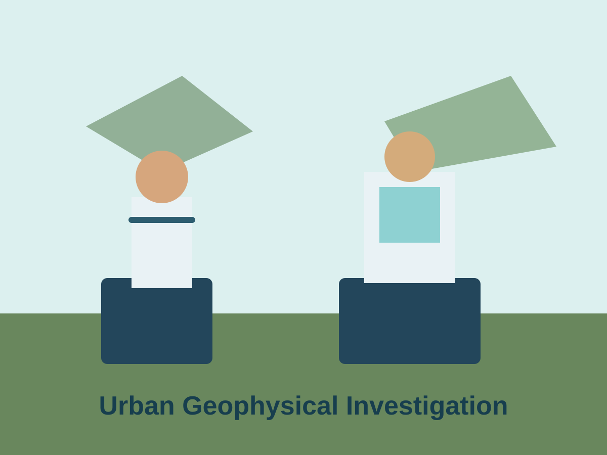
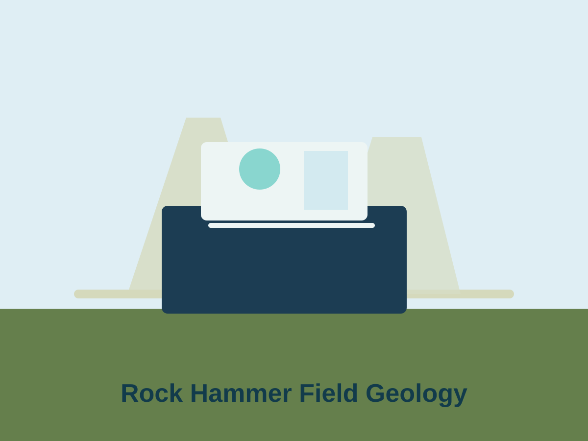
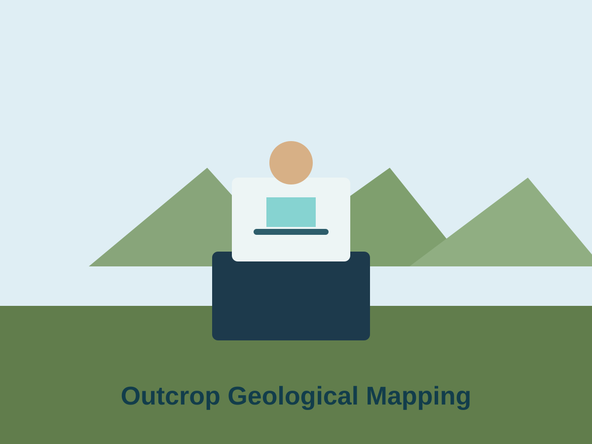
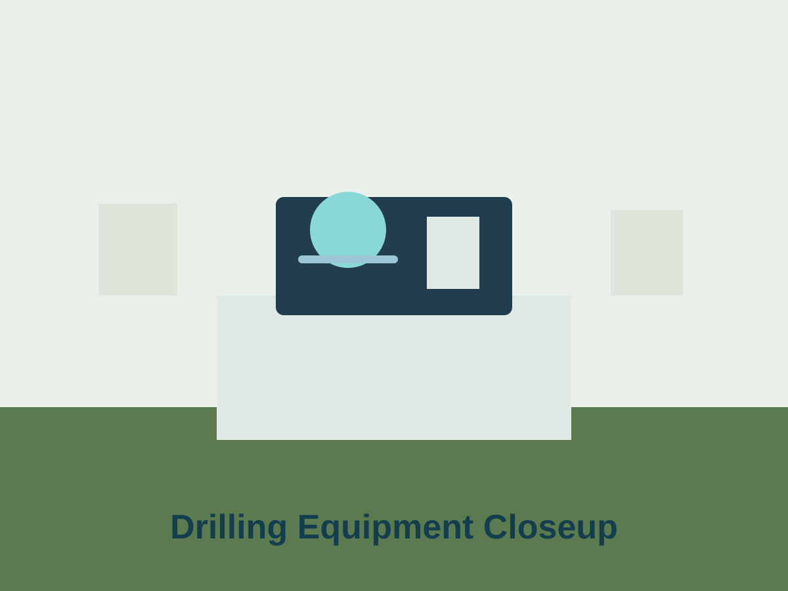
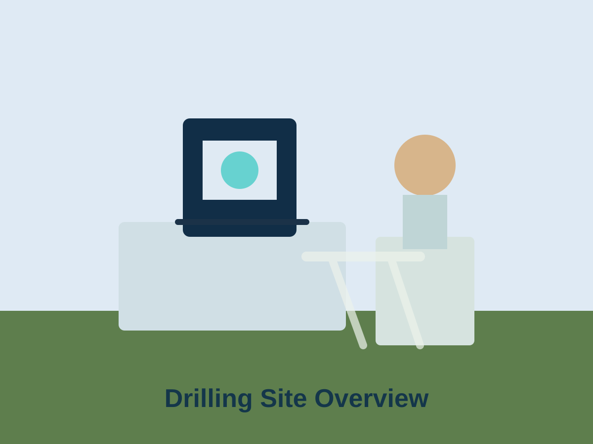